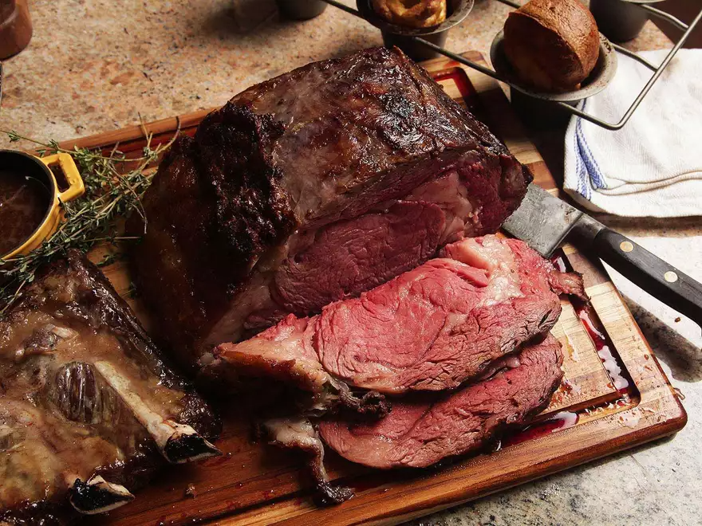

Reverse-Sear Prime Rib

Description
Prime rib is a tender, juciy cut of meat that's slow roasted in the open to perfection. It's full of flavor and is great with every occasion.
Ingredients
- 1 Standing rib roast
- 1 Tablespoon freshly ground black pepper
- Sea salt
Cooking Instructions
- Apply rub: Place the standing rib roast on a metal rack with a baking sheet beneath it. Liberally apply sea salt and fresh pepper all over the prime rib, including the underside. Rub it in with your fingers so it adheres to the meat.
Season overnight: Set it in the fridge to season overnight, uncovered. The roast will absorb the salt, resulting in a juicier prime rib.
- Bring to room temp: Remove the prime rib from the fridge and set on a roasting rack inserted into a roasting pan. Place it fat cap up and insert an oven safe thermometer into the thickest part of the rib roast. (Note: The salt should have fully absorbed into the prime rib.)
Set it out for 1 to 2 hours on the counter to help with even cooking.
- Roast: Position your oven rack to the lower middle of the oven and place the rib roast on top. Set the temperature to 250°F (121°C). Roast until the internal temperature reaches your desired doneness. Remove at 118°F or 48°C for medium rare.
- Rest: Remove from the oven and loosely cover with foil. Let it rest for 20 to 30 minutes. You should see the internal temperature rise from the residual heat.
- Reverse sear for brown crust: Increase your oven temp to 550°F (288°C) or as high as it will go. Once hot, place the rib roast back in the oven just until the crust is browned and crisp, anywhere from 4 to 8 minutes, depending on your oven. Watch carefully for burning, do not walk away during this step.
- Remove bone: Once the crust is seared, remove the roast from the oven and carve away the bones.
- Slice and serve: Slice the prime rib and serve immediately.